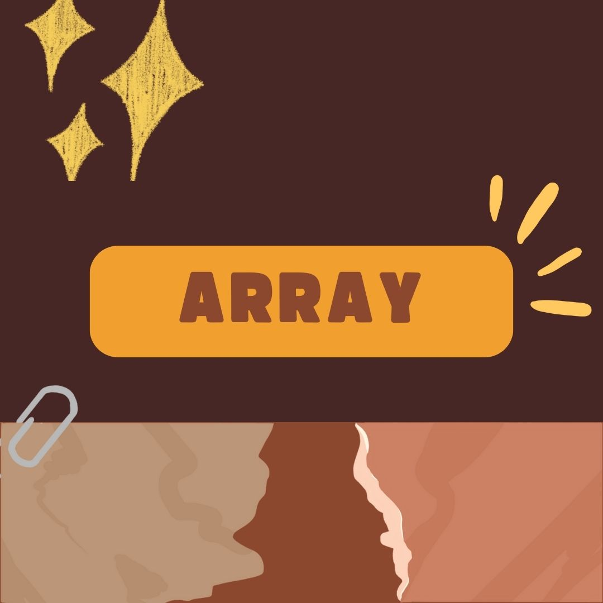
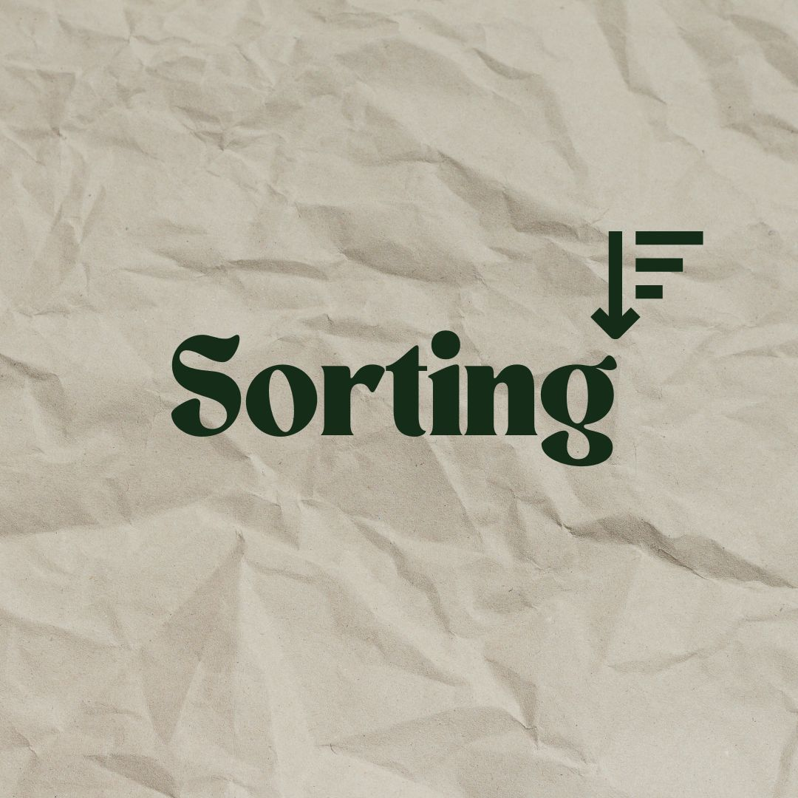
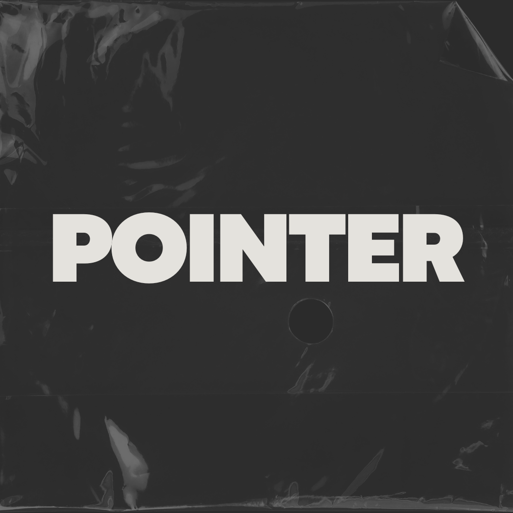

Blog ini berisi informasi tentang dunia Internet Communication and Technology
My Works
My Materials
Tipe Data
Type Data
Tipe data dalam pemrograman adalah sebuah pengklasifikasian data berdasarkan jenis data tersebut.

Array
Array
Array adalah tipe data yang digunakan untuk menyimpan kumpulan data dengan tipe yang sama.
Stack
Stack
Stack adalah struktur data linier yang mengikuti aturan tertentu untuk melakukan operasi.
Queue
Queue
Queue adalah struktur data linier yang digunakan untuk menyimpan sekumpulan elemen dengan prinsip “First-In-First-Out” (FIFO).
Linked List
Linked List
Struktur data linked list adalah salah satu jenis struktur data pada komputer yang berfungsi untuk menyimpan dan mengorganisir data dalam urutan tertentu.

Sorting
Sorting
Struktur data sorting adalah proses menyusun kembali data yang sebelumnya telah disusun dengan suatu pola tertentu, sehingga tersusun secara teratur menurut aturan tertentu.
Searching
Searching
Algoritma searching adalah suatu metode yang digunakan untuk mencari data tertentu dalam sebuah struktur data seperti array, list, atau tree

Pointer
Pointer
Algoritma pointer adalah suatu teknik pemrograman yang memungkinkan kita untuk mengakses dan memanipulasi data secara langsung pada lokasi memori tertentu.